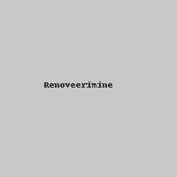
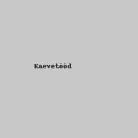

Meie teenused

Renoveerimine
Kodude ja äripindade uuendamine, et need näeksid välja ja tunneksid end nagu uued.

Kaevetööd
Professionaalsed kaevamis- ja pinnasetööd koos vajaliku tehnikaga.
Üldehitus
Vundamendist viimistluseni — teeme ära kogu töö.